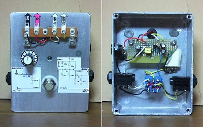
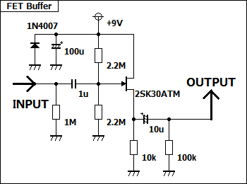
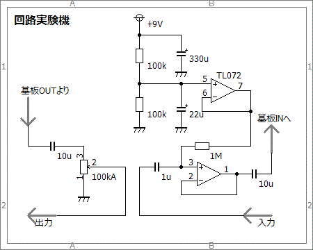

回路実験機 その2
2012年09月04日 カテゴリー：自作エフェクター（アナログ）

だいぶ前に作った回路実験機を使わなくなったケースを使って作り直しました。エフェクターの基板、もしくはブレッドボードで組んだ回路を実験的に音を出すためのものです。今回は前段にバッファ、後段にコンデンサとボリュームを入れていますので、ブレッドボードに組む回路が少なくて済みます。また、自作したエフェクター等の基板上のミスを探すときも利用できます。
バッファ部分の回路図は下図です。忘れそうなのでケース表面に回路図を貼り付けています。

---2016年10月20日追記---
バッファをオペアンプに変更しました。
